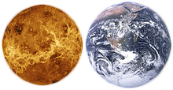
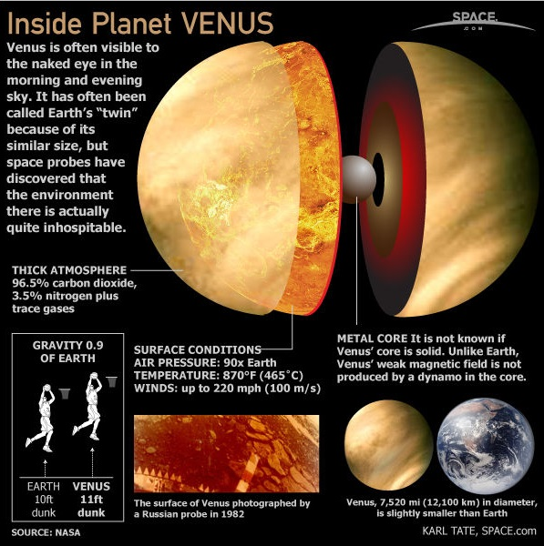

Venus is the second planet from the Sun, orbiting it every 224.7 Earth days. It has the longest rotation period (243 days) of any planet in the Solar System and rotates in the opposite direction to most other planets. It has no natural satellite. It is named after the Roman goddess of love and beauty. It is the second-brightest natural object in the night sky after the Moon, reaching an apparent magnitude of -4.6, bright enough to cast shadows. Because Venus is an inferior planet from Earth, it never appears to venture far from the Sun; its elongation reaches a maximum of 47.8 degrees.
 Venus is a terrestrial planet and is sometimes called Earth's "sister planet" because of their similar size, mass, proximity to the Sun, and bulk composition. It is radically different from Earth in other respects. It has the densest atmosphere of the four terrestrial planets, consisting of more than 96% carbon dioxide. The atmospheric pressure at the planet's surface is 92 times that of Earth. Venus is by far the hottest planet in the Solar System, with a mean surface temperature of 735 K (462°C; 863 °F), even though Mercury is closer to the Sun. Venus is shrouded by an opaque layer of highly reflective clouds of sulfuric acid, preventing its surface from being seen from space in visible light. It may have had water oceans in the past, but these would have vaporized as the temperature rose due to a runaway greenhouse effect. The water has probably photodissociated, and the free hydrogen has been swept into interplanetary space by the solar wind because of the lack of a planetary magnetic field. Venus's surface is a dry desertscape interspersed with slab-like rocks and is periodically resurfaced by volcanism.
Internal Structure

Without seismic data or knowledge of its moment of inertia, little direct information is available about the internal structure and geochemistry of Venus. The similarity in size and density between Venus and Earth suggests they share a similar internal structure: a core, mantle, and crust. Like that of Earth, the Venusian core is at least partially liquid because the two planets have been cooling at about the same rate. The slightly smaller size of Venus means pressures are 24% lower in its deep interior than Earth's. The principal difference between the two planets is the lack of evidence for plate tectonics on Venus, possibly because its crust is too strong to subduct without water to make it less viscous. This results in reduced heat loss from the planet, preventing it from cooling and providing a likely explanation for its lack of an internally generated magnetic field. Instead, Venus may lose its internal heat in periodic major resurfacing events